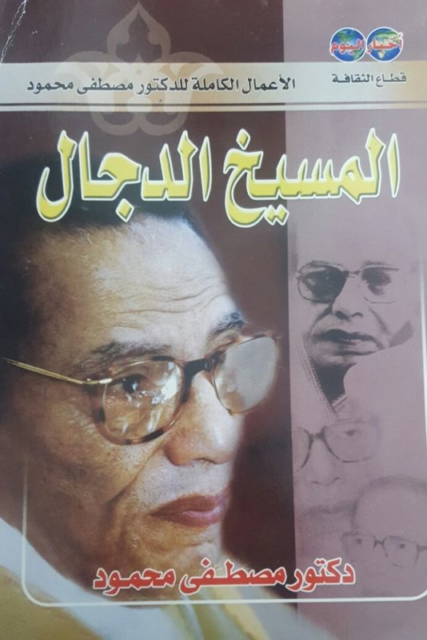
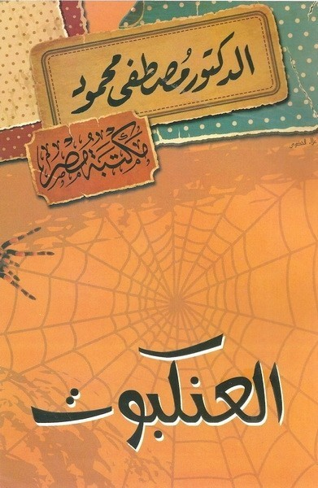
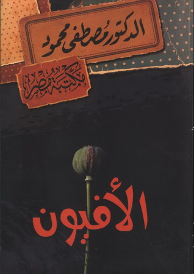
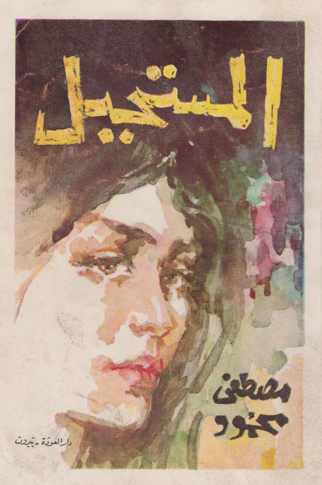
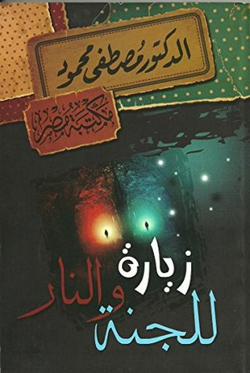
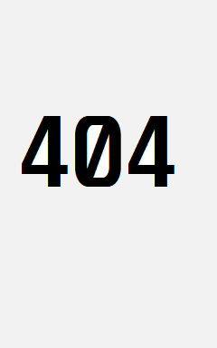
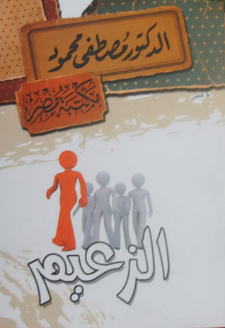
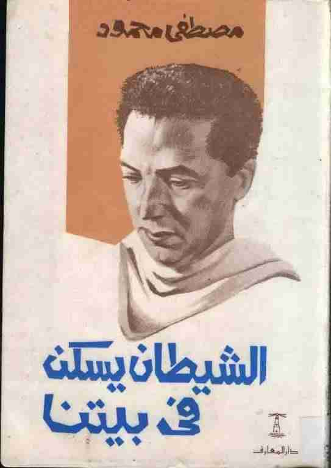
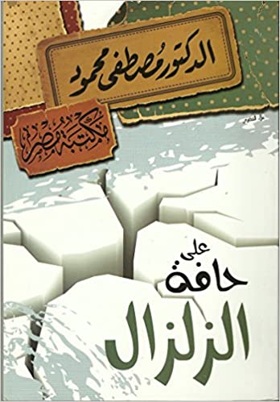

الكتابة النثرية:
كتب مصطفى محمود أيضاً في الفن، الدراما و الإثارة التي هي هادفة أكثر ما أن تكون مسلية، أذكر هنا بعضاً من مقالتهِ، مسرحياته و طبعاً، روايته التي ذاع صيتها و لا تزال تقرأ إلى يومنا هذا:
مقالات و نثر
الشيطان يحكم
كتاب نثري
أُصدر عام: 1985
قصص قصيرة

المسيخ الدجال
قصة قصيرة
أُصدر عام: 1979
روايات - قصص طويلة
رجل تحت الصفر
قصة طويلة
أُصدرت عام: 1979
الخروج من التابوت
قصة طويلة
أُصدرت عام: 1965

العنكبوت
قصة طويلة
أُصدرت عام: 1965

الأفيون
قصة طويلة
أُصدرت عام: 1964

المستحيل
قصة طويلة
أُصدرت عام: 1965
مسرحيات

زيارة للجنة والنار
مسرحية
أُصدرت عام: 1996

أصغر نار الجحيم

الزعيم
مسرحية
أُصدرت عام: 1973

الشيطان يسكن في بيتنا
مسرحية
أُصدرت عام: 1973

الزلزال
مسرحية
أُصدرت عام: 1963

الإسكندر الأكبر
مسرحية
أُصدرت عام: 1963